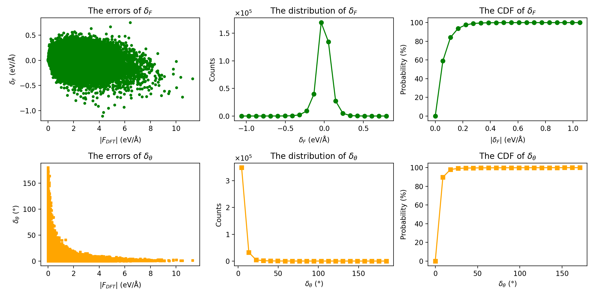
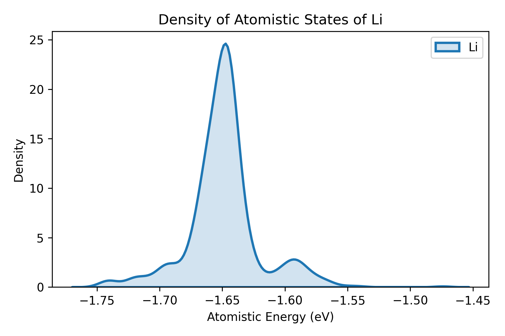
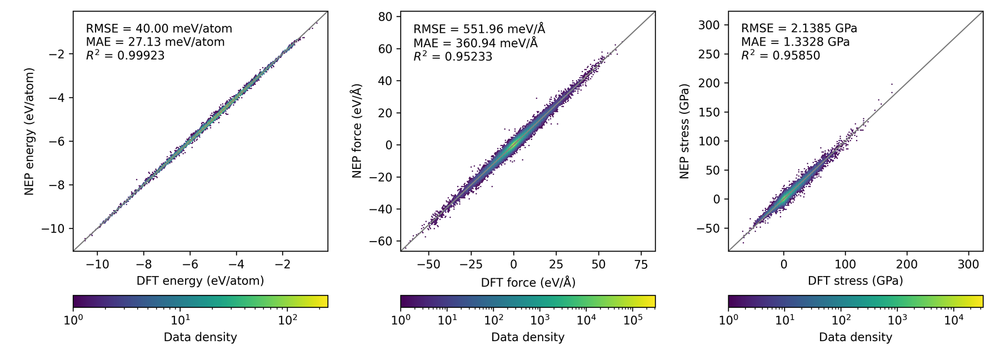
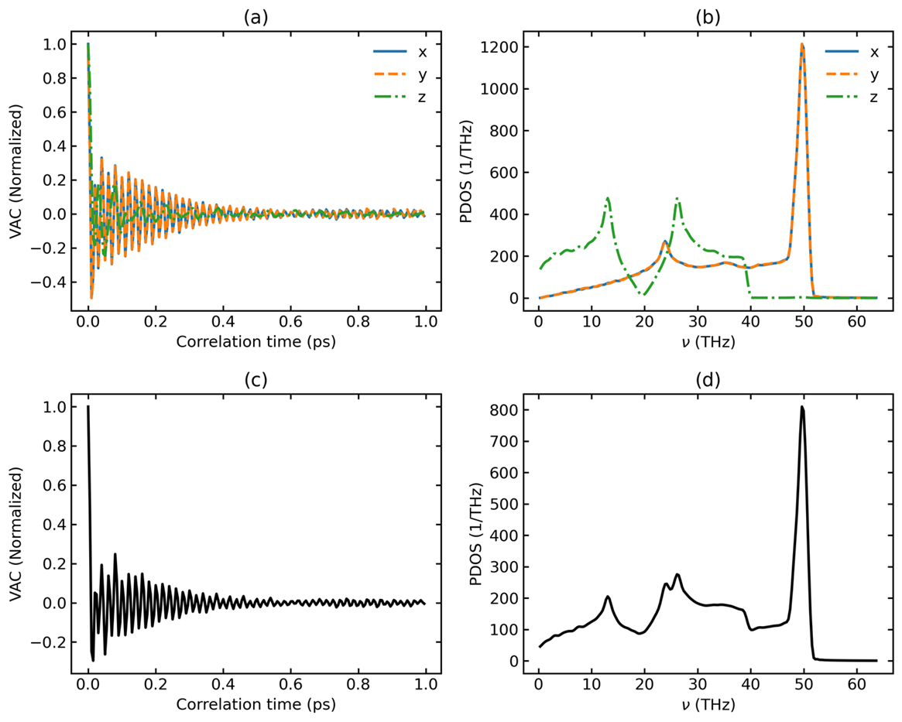

GPUMDkit 是什么？
- 为 GPUMD 与 NEP 提供统一命令入口。
- 支持 格式转换、结构采样、工作流自动化、计算器、分析器、绘图脚本。
- 具备交互式菜单与命令行双模式，适配初学者与高通量用户。
- 支持自定义命令与 Bash 补全，便于个人化扩展。
核心功能模块 I
格式转换
VASP / CP2K / ABACUS / LAMMPS / CIF / extxyz
VASP / CP2K / ABACUS / LAMMPS / CIF / extxyz
结构采样
uniform / random / neptrain FPS / 扰动结构
uniform / random / neptrain FPS / 扰动结构
Workflow 自动化
SCF 与 MD 批处理预处理
SCF 与 MD 批处理预处理


核心功能模块 II
Calculators
离子电导、DOAS、NEB、描述符等
离子电导、DOAS、NEB、描述符等
Analyzer
范围统计、最短距离、过滤、组分分析
范围统计、最短距离、过滤、组分分析
Plot Scripts
NEP训练、热力学、输运、结构分析可视化
NEP训练、热力学、输运、结构分析可视化



可视化画廊（来自 docs/Gallery）







谢谢观看
文档入口：docs/tutorials/*.md 与 Scripts/*/README.md
仓库：zhyan0603/GPUMDkit
按键说明：←/→ 或 ↑/↓ 切换；点击左侧大纲快速跳转。